Learning Fusion 360
Intro to Fusion 360
Making the Radioactive Symbol in Fusion 360
Making the Chemical Symbol in Fusion 360
Starting the sketch an inital base circle was made. Then it was extruded in order to make a base for the symbol. A new sketch was then made on top of the base where an initial circle was made then three offset circles of that initial circle was made. Three circle were then made and connected via a line to the origin with the top line being set vertical.Then the three circle were connected with lines that were all set equal with the bottom line getting set the horizontal constraint making them equidistant from each other and around the circle. Two parallel lines were then made connecting to the top circle from one of the offset circles to form a connection to the circle. A construction line were made between them to define them by setting its dimension. Outer bars were then formed to the top connection in the same method. This was then repeated for each of the remaining circles completing the now fully defined sketch. The appropriate parts of the symbol were slected then extruded upwards. The appearence tool was then brought up, yellow and black materials were made by selecting white abs and editting it, then applied. Then the final symbol is complete.
Starting the sketch an inital base circle was made. Then it was extruded in order to make a base for the symbol. A new sketch was then made on top of the base where an initial circle was made then three offset circles of that initial circle was made. Three circle were then made and connected via a line to the origin with the top line being set vertical.Then the three circle were connected with lines that were all set equal with the bottom line getting set the horizontal constraint making them equidistant from each other and around the circle. Two parallel lines were then made connecting to the top circle from one of the offset circles to form a connection to the circle. A construction line were made between them to define them by setting its dimension. Outer bars were then formed to the top connection in the same method. This was then repeated for each of the remaining circles completing the now fully defined sketch. The appropriate parts of the symbol were slected then extruded upwards. The appearence tool was then brought up, yellow and black materials were made by selecting white abs and editting it, then applied. Then the final symbol is complete.
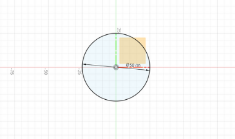
Inital Base Sketch
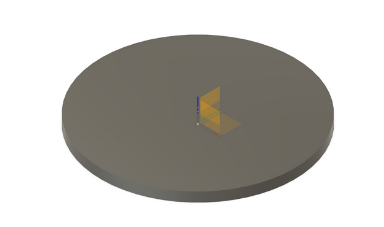
Extrustion of Inital Sketch
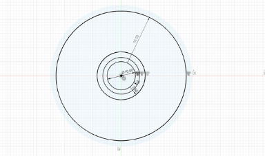
Offset Circles
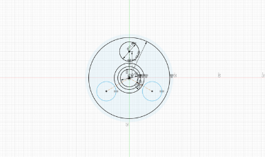
Three Circle Connected to Origin
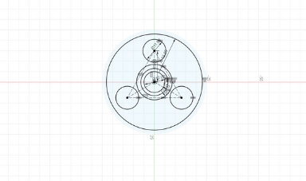
Equidistant Circles
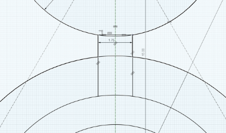
Connecting to the Top Circle
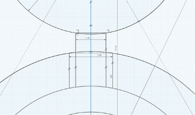
Outer Lines were Added
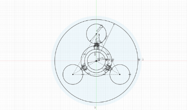
Completed Sketch
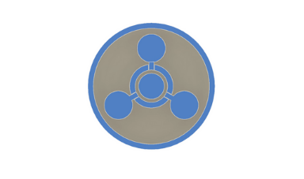
Extruding the Symbol
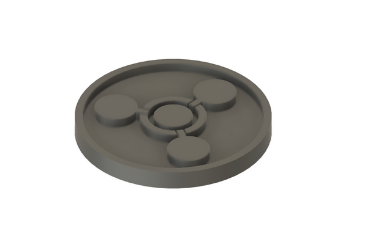
Extruded Symbol
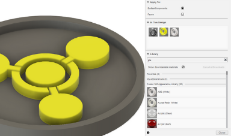
Editting Appearence
Finished Chemical Symbol
Printing the Chemical Symbol
To actually print the model once I was done in Fusion 360 I then exported it as an STL from Fusion then uploaded it into Prusa Slicer. I then switched to the layer view in Prusa Slicer, and added a pause the layer the symbol started printing to switch colors. I double checked my print settings, then sliced it and exported the gcode. I then opened Octoprint and uploaded the gcode to the printer via octoprint. I loaded in my prusament grey filament, then started the print from octoprint. Then I switched colors to the black filament, and let the print finish. Once done I removed the base plate and goy my finished symbol.
To actually print the model once I was done in Fusion 360 I then exported it as an STL from Fusion then uploaded it into Prusa Slicer. I then switched to the layer view in Prusa Slicer, and added a pause the layer the symbol started printing to switch colors. I double checked my print settings, then sliced it and exported the gcode. I then opened Octoprint and uploaded the gcode to the printer via octoprint. I loaded in my prusament grey filament, then started the print from octoprint. Then I switched colors to the black filament, and let the print finish. Once done I removed the base plate and goy my finished symbol.
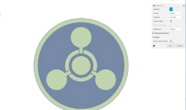
Exporting as STL
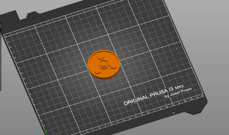
Importing into Prusa Slicer
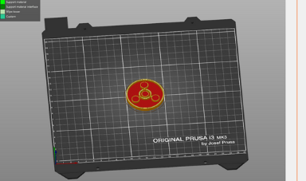
Layer View in Prusa Slicer
Adding Pause Print
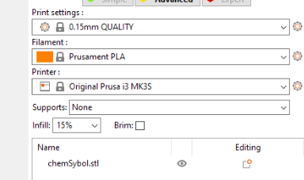
Print Settings
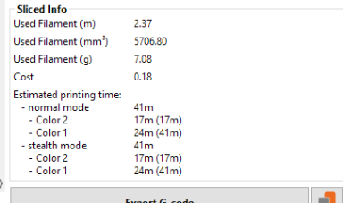
Sliced Info
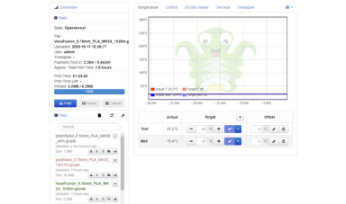
Octoprint Home Screen
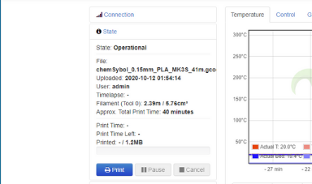
Uploaded file to Print
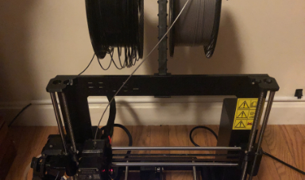
Loaded Grey Filament
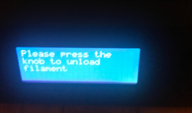
Switched Filaments
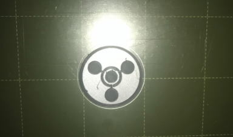
Finished Printing
 Final Chemical Symbol
Final Chemical Symbol
Click Here to Download all the files!